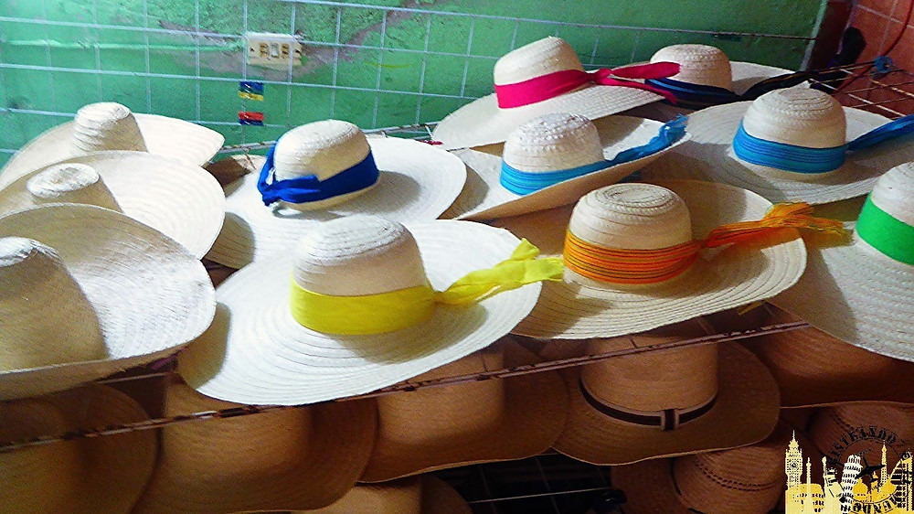

Las artesanías de Campeche son una expresión viva de su identidad cultural, resultado de la fusión de tradiciones mayas y españolas que han perdurado a lo largo del tiempo. Estas manifestaciones artísticas, transmitidas de generación en generación, reflejan la riqueza y diversidad del estado, utilizando materiales locales y técnicas ancestrales. Desde los finos sombreros de palma de jipi hasta las coloridas hamacas y los delicados bordados, cada pieza artesanal cuenta una historia y representa el ingenio y la creatividad de los campechanos. Estas obras no solo son objetos decorativos o utilitarios, sino también símbolos de la herencia cultural que define a Campeche.
Sombreros de palma de jipi de Bécal
En el municipio de Bécal, se elaboran los famosos sombreros de palma de jipi, también conocidos como sombreros estilo Panamá. Estos sombreros se tejen a mano utilizando fibras de la palma jipi, trabajadas en cuevas húmedas para mantener su flexibilidad. El proceso de elaboración es meticuloso y puede durar varios días, resultando en piezas ligeras y elegantes que han ganado reconocimiento internacional. Además de sombreros, los artesanos de Bécal crean otros artículos como abanicos, bolsos y cigarreras, todos elaborados con la misma técnica y dedicación.

Bordados de Dzitbalché
La comunidad de Dzitbalché es conocida por sus bordados a mano, especialmente en la confección de huipiles y guayaberas. Utilizando hilos de colores vivos, las artesanas crean diseños florales y geométricos que adornan estas prendas tradicionales. Los bordados reflejan la identidad cultural de la región y son una expresión del arte textil campechano. Además,
se emplean técnicas como el hilo contado y el bordado a máquina, lo que
permite una amplia variedad de estilos y acabados en las prendas.
Hamacas de Calkiní
En Calkiní, la elaboración de hamacas es una tradición ancestral. Tejidas en bastidores con fibras de algodón o hilos sintéticos, estas hamacas ofrecen comodidad y frescura, ideales para el clima cálido de la región. Los diseños varían en colores y patrones, y su fabricación requiere habilidad y paciencia. Las hamacas de Calkiní son reconocidas por su resistencia y durabilidad, siendo un elemento esencial en los hogares campechanos.

Alfarería de Tepakán
El poblado de Tepakán destaca por su alfarería, produciendo piezas como vasijas, macetas y vajillas. Utilizando técnicas tradicionales, los artesanos moldean el barro y lo decoran con motivos que evocan sus raíces prehispánicas. Estas piezas son tanto utilitarias como decorativas, representando la herencia cultural de la región. La alfarería de Tepakán se caracteriza por sus formas elegantes y colores suaves, que reflejan la estética maya.
Tallado en madera
El tallado en madera es una práctica común en municipios como Campeche, Escárcega y Champotón. Los artesanos crean figuras decorativas, muebles y utensilios, a menudo incorporando detalles elaborados y técnicas de ensamblaje. La madera utilizada proviene de especies locales, y las piezas reflejan tanto la funcionalidad como la estética tradicional. Entre las creaciones más destacadas se encuentran las esculturas de animales y las miniaturas de barcos, que muestran la destreza y creatividad de los talladores campechanos.
Artesanías marinas
En las zonas costeras de Campeche, como Ciudad del Carmen y Champotón, se elaboran artesanías utilizando conchas marinas y escamas de pescado. Estas materias primas se transforman en objetos decorativos como lámparas, cortinas y figuras ornamentales. La creatividad de los artesanos convierte elementos marinos en piezas únicas que reflejan la vida costera. Estas artesanías no solo embellecen los espacios, sino que también representan la conexión profunda entre los habitantes y el mar.
Cestería de palma
La cestería es una tradición en diversas comunidades de Campeche, donde se utilizan fibras de palma para tejer cestas, sombreros y otros objetos. Las técnicas de tejido varían, y las piezas resultantes combinan funcionalidad con diseños estéticos. Esta artesanía refleja la conexión de las comunidades con su entorno natural y su habilidad para transformar recursos locales en productos útiles. Los petates y canastas elaborados con palma son ejemplos de la maestría de los artesanos campechanos en esta disciplina.
Conservas de Tinún
La comunidad de Tinún es reconocida por la elaboración de conservas de frutas y chiles. Utilizando recetas tradicionales, se preparan dulces de nance, mango y papaya, así como chiles en escabeche. Estas conservas no solo son una delicia gastronómica, sino que también representan la preservación de técnicas culinarias ancestrales. Los productos de Tinún son apreciados por su sabor auténtico y por mantener vivas las tradiciones culinarias de Campeche.